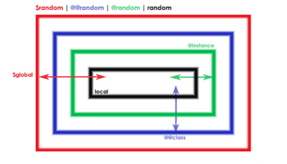
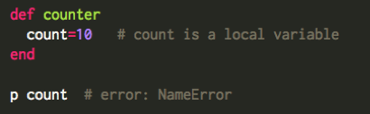
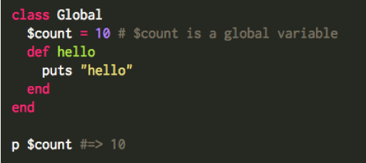
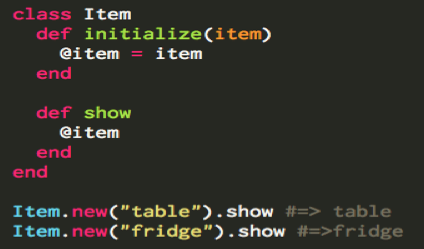
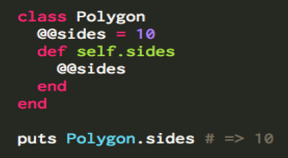
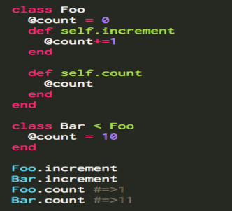

Variable scope defines where in a program a variable is accessible. Each variable type is declared by using a special character at the start of the variable name.
The different variable scopes available in ruby are:
- Local variables [a-z] or _
- Global variables $
- Instance variables @
- Class variables @@
- Class instance variables @

1. Local Variables
Local variables are local to the code construct in which they are declared. For example, a local variable declared in a method or within a loop cannot be accessed outside of that loop or method. Local variable names must begin with either an underscore or a lower case letter. For example, count is a local variable and accessing it outside the method raises a NameError.

2. Global Variables
Global variables in Ruby are accessible from anywhere in the Ruby program, regardless of where they are declared. Global variable names are prefixed with a dollar sign ($). For example, $count is a global variable and is accessible outside the class.

3. Instance Variables
Instance variables are bound to the specific instance of a class. They by declared by prefixing the variable name with a single @ symbol. Changes made to an instance variable by one object of the class are local to that object. Every object of the same class has their own local copies of the variable, which are independent of changes made in any other objects.

4. Class Variables
Class variables are prefixed with @@ symbol. Class variables are like instance variables, but instead of belonging to an instance of a class, they belong to the class itself. Class variables are shared by all objects of a class. Instance methods can access both the class variables and the class methods. Class methods can access class variables but cannot access instance variables or instance methods.

5. Class Instance Variables
Class instance variables use the same notation as that of an instance variable. But unlike instance variable, you declare them inside the class definition directly. Class instance variables are a better alternative to class variables because the data is not shared across the inheritance chain. The difference between the class instance variable and an instance variable is that a class instance variable is initialized directly in the class body and is accessed only from class methods.
In the example below @count is the class instance variable, which has a separate assigned value for both classes Foo and Bar. Incrementing @count in Foo class does not have any effect in the @count of The Bar class and vice versa.
